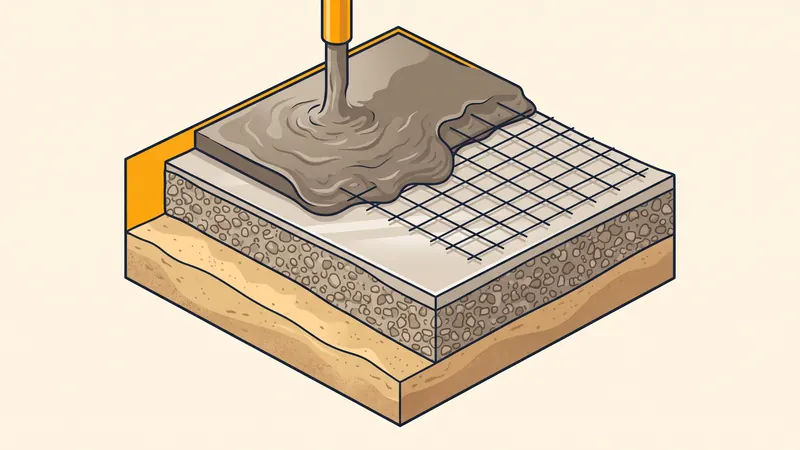

Prix Dalle Béton au m² en 2026 : Tarifs & Guide Complet
Vous projetez de couler une dalle béton pour votre terrasse, votre garage, un abri de jardin ou le contour d'une piscine ? Le béton reste le matériau de référence pour créer une surface plane, stable et durable. Mais combien faut-il prévoir ? Dans ce guide complet, nous détaillons les prix d'une dalle béton au m² en 2026 à Aix-en-Provence et en PACA, type par type, ainsi que les postes techniques (terrassement, hérisson, ferraillage, dosage) qui font varier la facture. Objectif : vous permettre de budgétiser votre projet sans mauvaise surprise.

Le prix moyen d'une dalle béton au m² en 2026
En moyenne, une dalle béton fournie et posée coûte entre 40 et 90 €/m² en 2026. Cette fourchette large s'explique par la nature de la dalle, son épaisseur, le ferraillage choisi et surtout la finition (béton brut lissé, désactivé, imprimé). Voici le détail par type de dalle pour la région Provence-Alpes-Côte d'Azur :
| Type de dalle béton | Prix fourni-posé (TTC) | Usage type |
|---|---|---|
| Dalle terrasse (béton lissé 8-10 cm) | 40 - 65 €/m² | Terrasse, contour de maison |
| Dalle garage / allée (12 cm ferraillée) | 50 - 75 €/m² | Véhicule léger, parking |
| Dalle abri / pool house / piscine | 45 - 70 €/m² | Abri de jardin, margelles |
| Dalle béton désactivé | 70 - 110 €/m² | Allée décorative, terrasse |
| Dalle béton imprimé | 80 - 120 €/m² | Terrasse, allée carrossable |
| Dalle béton autoplaçant / autonivelant | 55 - 85 €/m² | Grandes surfaces, intérieur |
Ces tarifs incluent généralement le coffrage périphérique, le film polyane, le treillis soudé, le béton dosé à 350 kg et la finition de surface. En revanche, le terrassement préalable (décaissement, hérisson, évacuation des terres) est le plus souvent facturé en supplément.

Les facteurs qui font varier le prix d'une dalle béton
Le prix annoncé au m² recouvre en réalité plusieurs postes successifs. Voici comment se décompose le coût d'une dalle béton de qualité :
| Poste de travaux | Description | Coût indicatif |
|---|---|---|
| Terrassement / décaissement | Retrait de la terre végétale sur 20-30 cm | 15 - 30 €/m² |
| Hérisson (cailloux 0/31,5) | Couche drainante de 10 à 15 cm compactée | 10 - 20 €/m² |
| Film polyane (polyéthylène) | Barrière anti-remontée d'humidité | 2 - 4 €/m² |
| Treillis soudé / ferraillage | ST25C à ST35C selon charges | 5 - 12 €/m² |
| Béton dosé 350 kg/m³ (C25/30) | Fourniture + coulage + tirage | 18 - 30 €/m² |
| Finition (lissage, désactivé, imprimé) | De la talochage simple au décoratif | 5 - 50 €/m² |
| Surface du chantier | Petite surface = prix unitaire majoré | +10 à +25 % |
Plus la surface est grande, plus le prix unitaire baisse grâce à l'effet d'échelle : sous 20 m², les frais fixes (acheminement de la toupie, installation, coffrage) pèsent lourd dans le prix au m².
Quelle épaisseur de dalle béton choisir ?
L'épaisseur de la dalle est le premier critère technique qui détermine la résistance et le prix, puisqu'elle conditionne le volume de béton et le ferraillage. Voici nos recommandations :
- 8 à 10 cm : terrasse piétonne, contour de maison, abri léger.
- 12 cm : garage, allée et accès recevant un véhicule léger, parking.
- 15 cm et plus : accès poids lourd, atelier, dalle supportant de fortes charges ou un bâtiment.
Une dalle trop fine fissure rapidement sous les charges ; une dalle surdimensionnée gaspille du béton. Le bon calibrage par un professionnel optimise donc à la fois la durabilité et le budget.
Les couches d'une dalle béton bien réalisée
Une dalle durable ne se résume pas au béton coulé : elle repose sur un empilement de couches techniques, du bas vers le haut :
- Fond de forme : sol décaissé, nivelé et compacté.
- Hérisson : 10 à 15 cm de cailloux (0/31,5) compactés pour drainer et répartir les charges.
- Film polyane : feuille de polyéthylène empêchant les remontées d'humidité et la dessiccation du béton par le sol.
- Treillis soudé : ST25C pour une terrasse, ST35C ou supérieur pour un accès véhicule, posé sur cales pour rester noyé dans le béton.
- Béton : dosé à 350 kg de ciment/m³ (C25/30), tiré à la règle puis lissé ou décoré.
- Joints de dilatation : sciés ou prévus tous les 25 à 30 m² pour absorber les variations thermiques et éviter la fissuration anarchique.
Quel dosage et quelle cure pour le béton ?
Le dosage standard d'une dalle est de 350 kg de ciment par m³ (béton C25/30). Pour une dalle de garage ou un accès véhicule, on monte volontiers à 350-400 kg afin d'augmenter la résistance à la compression. Côté séchage, on peut marcher sur la dalle après 24 à 48 h, circuler avec un véhicule léger après 7 jours, mais la résistance complète n'est atteinte qu'après 28 jours de cure. Une cure soignée (arrosage ou produit de cure) est essentielle, surtout sous le climat provençal.
Obtenez Votre Devis Dalle Béton Gratuit
Chez STP Terrassement, nous réalisons vos dalles béton à Aix-en-Provence et dans toute la région PACA : terrasse, garage, allée, béton désactivé ou imprimé. Devis détaillé, transparent et sans engagement.
Demandez votre devis gratuitPrix d'une dalle béton par type de projet
Dalle béton pour terrasse
La dalle de terrasse est le projet le plus courant. En béton lissé de 8 à 10 cm sur hérisson, comptez 40 à 65 €/m² fourni-posé. Elle sert de support solide pour recevoir ensuite un carrelage, des dalles ou un revêtement décoratif. Pensez à prévoir une légère pente (1 à 2 %) pour l'évacuation des eaux de pluie. Pour aller plus loin sur l'aménagement extérieur, une finition désactivée évite la pose ultérieure d'un revêtement.
Dalle béton pour garage et allée carrossable
Une dalle de garage ou d'allée carrossable doit supporter le poids des véhicules : épaisseur de 12 cm minimum et treillis ST35C. Le prix grimpe à 50 à 75 €/m². Pour un accès poids lourd ou un portail à automatiser, on passe à 15 cm avec un ferraillage renforcé.
Dalle pour abri de jardin et contour de piscine
Pour un abri de jardin, un pool house ou les abords d'une piscine, une dalle de 10 à 12 cm suffit dans la plupart des cas, soit 45 à 70 €/m². Le drainage et la planéité sont ici déterminants pour éviter les flaques et garantir la stabilité de la structure posée par-dessus.
Béton désactivé et béton imprimé
Le béton désactivé (granulats apparents, antidérapant et décoratif) coûte 70 à 110 €/m², tandis que le béton imprimé (motifs imitant la pierre, le bois ou le pavé) atteint 80 à 120 €/m². Ces finitions intègrent directement le revêtement esthétique, ce qui peut rester compétitif face à des pavés autobloquants une fois la pose comprise.
Prix d'une dalle béton en région PACA
La région Provence-Alpes-Côte d'Azur présente des particularités qui influencent la réalisation et le prix d'une dalle béton :
- Sols calcaires : fréquents autour d'Aix-en-Provence, ils nécessitent parfois un décaissement plus dur (et donc plus coûteux) avant la mise en place du hérisson.
- Sols argileux gonflants : sensibles au retrait-gonflement, ils imposent un bon drainage et un ferraillage soigné pour éviter les fissures.
- Fortes chaleurs estivales : un béton coulé en pleine journée sèche trop vite en surface et fissure. On coule donc tôt le matin et on assure une cure (arrosage ou produit de cure) pour éviter la fissuration de retrait.
- Mistral et sécheresse : le vent accélère l'évaporation de l'eau du béton frais, ce qui renforce l'importance de la cure et des produits de protection.
Les étapes de réalisation d'une dalle béton
Un chantier de dalle béton professionnel suit un déroulé précis :
- Implantation et niveaux : repérage des contours, pente et altimétrie.
- Décaissement : retrait de la terre végétale sur 20 à 30 cm.
- Hérisson : apport et compactage de cailloux drainants.
- Coffrage et polyane : pose du coffrage périphérique et du film d'étanchéité.
- Ferraillage : mise en place du treillis soudé sur cales.
- Coulage : béton tiré à la règle, vibré puis lissé ou décoré.
- Joints et cure : sciage des joints de dilatation et protection pendant 28 jours.
Exemple de chantier réel à Aix-en-Provence
Dalle terrasse en béton désactivé à Puyricard
Projet : Réalisation d'une terrasse de 42 m² en béton désactivé prolongeant le séjour vers le jardin.
Localisation : Quartier de Puyricard, au nord d'Aix-en-Provence.
Épaisseur : 12 cm avec treillis soudé ST35C.
Durée : 4 jours ouvrés (terrassement, hérisson, coulage, désactivation).
Défis rencontrés : Sol calcaire dur sous 40 cm de terre végétale et canicule annoncée (35 °C) sur la semaine de coulage.
Solution STP : Nous avons décaissé sur 28 cm avec une mini-pelle, mis en place un hérisson de 12 cm compacté à la plaque vibrante, posé le polyane et le treillis sur cales, puis coulé un béton dosé à 350 kg. Pour contrer la chaleur, le coulage a été programmé à 6 h 30 du matin et la dalle protégée par un voile d'arrosage pendant 5 jours. La finition désactivée a été obtenue par pulvérisation d'un désactivant puis lavage à haute pression au bon moment.
Résultat : Terrasse plane (pente 1,5 % vers le jardin), aucune fissure de retrait, granulats régulièrement répartis. Facture finale conforme au devis (3 020 € TTC, soit 72 €/m² finition comprise).
Les erreurs courantes à éviter
- Couler directement sur la terre sans hérisson ni polyane. Sans couche drainante ni barrière d'humidité, la dalle remonte l'eau du sol, gèle et fissure dès le premier hiver.
- Supprimer le ferraillage pour économiser. Une dalle non armée se fissure rapidement sous les charges et les variations thermiques, surtout sur sols argileux PACA.
- Oublier les joints de dilatation. Au-delà de 25-30 m², l'absence de joints provoque des fissures anarchiques impossibles à rattraper.
- Couler en pleine chaleur sans cure. En été provençal, un béton non protégé sèche trop vite en surface et se fendille : il faut couler tôt et arroser.
- Négliger la pente d'évacuation. Une dalle parfaitement horizontale retient l'eau, favorise les mousses et dégrade le revêtement posé dessus.
- Comparer des devis sur le seul prix au m². Un devis bas omet souvent le terrassement, le hérisson ou le ferraillage : comparez toujours le détail des postes.
FAQ : Vos questions sur le prix d'une dalle béton
Quel est le prix d'une dalle béton au m² en 2026 ?
Le prix d'une dalle béton fournie et posée se situe entre 40 et 90 €/m² en 2026. Une dalle terrasse classique coûte 40 à 65 €/m², une dalle de garage 50 à 75 €/m² et une finition décorative comme le béton désactivé ou imprimé grimpe de 70 à 120 €/m².
Quelle épaisseur de dalle béton choisir ?
Comptez 8 à 10 cm pour une terrasse piétonne, 12 cm pour un garage ou une allée recevant un véhicule léger et 15 cm ou plus pour un accès poids lourd ou un abri lourd. L'épaisseur conditionne le volume de béton et le ferraillage, donc le prix au m².
La dalle béton inclut-elle le terrassement et le hérisson ?
Pas toujours. Un prix de dalle fourni-posé inclut généralement le coffrage, le film polyane, le treillis soudé, le béton et la finition. Le décaissement, le hérisson de cailloux et l'évacuation des terres sont souvent facturés en supplément, de 15 à 35 €/m² selon le sol.
Faut-il ferrailler une dalle béton extérieure ?
Oui, un treillis soudé (ST25C pour une terrasse, ST35C ou plus pour un accès véhicule) est indispensable pour répartir les charges et limiter la fissuration. En PACA, sur sols calcaires et argileux sensibles, le ferraillage est même fortement recommandé sous peine de fissures rapides.
Combien coûte une dalle béton de 30 m² pour une terrasse ?
Pour une terrasse de 30 m² en béton lissé de 10 cm d'épaisseur, comptez entre 1 500 et 2 400 € TTC fourni-posé. Avec une finition béton désactivé, le budget monte à 2 700-3 600 €, hors terrassement préalable.
Quel dosage de béton pour une dalle ?
Le dosage standard pour une dalle est de 350 kg de ciment par m³ de béton (béton C25/30). Pour une dalle de garage ou un accès véhicule, on privilégie un dosage de 350 à 400 kg afin d'augmenter la résistance à la compression.
Combien de temps de séchage pour une dalle béton ?
On peut marcher sur une dalle après 24 à 48 h, mais la résistance mécanique complète n'est atteinte qu'après 28 jours de cure. Comptez 7 jours avant de circuler avec un véhicule léger et 21 à 28 jours avant une charge lourde ou une chape.
Pourquoi couler une dalle tôt le matin en Provence ?
Sous les fortes chaleurs de l'été provençal, un béton coulé en pleine journée sèche trop vite en surface et fissure. Couler tôt le matin et arroser la dalle pendant la cure (ou poser un produit de cure) évite la dessiccation et la fissuration de retrait.
Pour aller plus loin
Pourquoi faire appel à STP Terrassement
Confier votre dalle béton à STP Terrassement, c'est s'appuyer sur une entreprise locale implantée à Simiane-Collongue (13109) et intervenant chaque jour à Aix-en-Provence et dans toute la région PACA. Nous maîtrisons l'ensemble de la chaîne, du terrassement et du décaissement à la finition décorative, ce qui vous garantit un interlocuteur unique et une dalle réalisée dans les règles de l'art (hérisson, polyane, ferraillage adapté, dosage 350 kg, joints de dilatation, cure soignée). Nos équipes bénéficient d'un parc d'engins récents, d'une garantie décennale en cours de validité et d'une expérience de plus de 15 ans. Nous établissons un devis détaillé gratuit et sans engagement, nous respectons le planning et le budget validés et nous adaptons le coulage aux contraintes climatiques provençales pour éviter toute fissuration. Demandez votre devis gratuit en ligne, écrivez-nous via notre page contact ou appelez-nous au 07 45 14 20 49 pour échanger directement avec un chargé d'affaires.